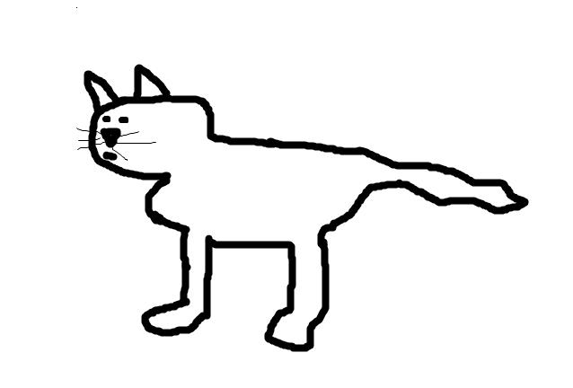
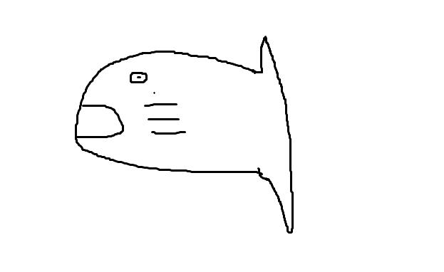
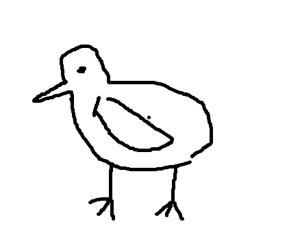
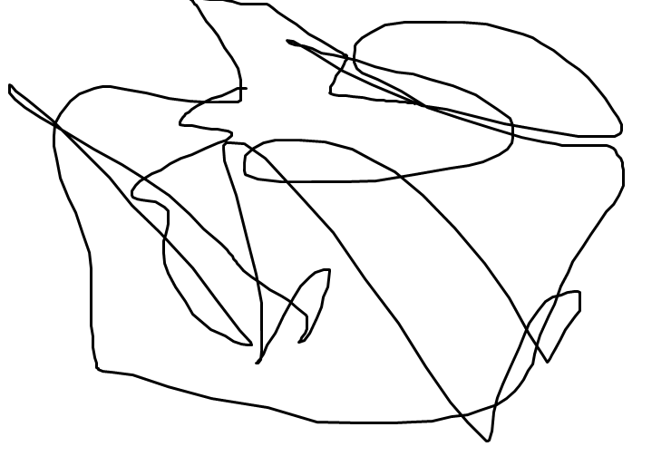
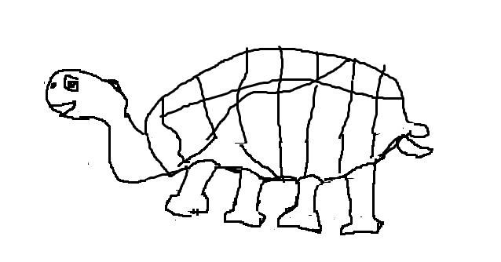
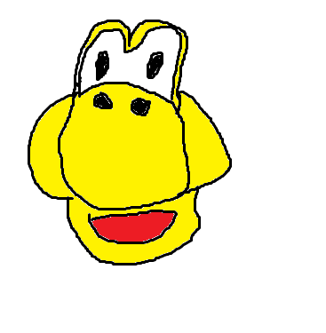
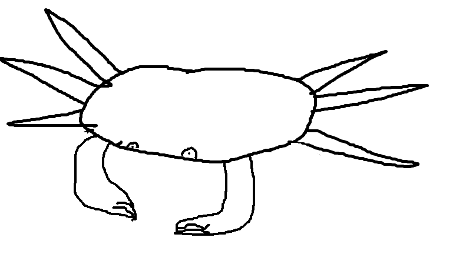
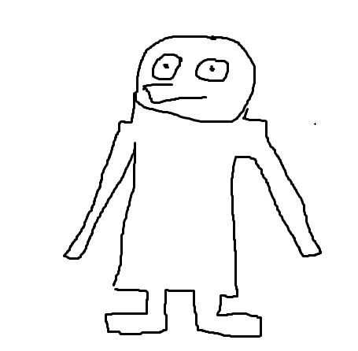

Le musée de joey

Portrait du chat de joey

Portrait du poisson de joey

Portrait du "volatile non identifié" de joey

La description de dieu par joey

Maison d'un ver de terre constitué de 4 fémurs avec viande soudé d'après joey

Ceci est le premier dessin coloré de joey. Nous n'avons pas pu identifié si c'était un gateau ou ses enfants qui l'ont "graphé"

Le tapis à l'éffigie du défunt crabe de joey

Retour
Autoportrait de joey